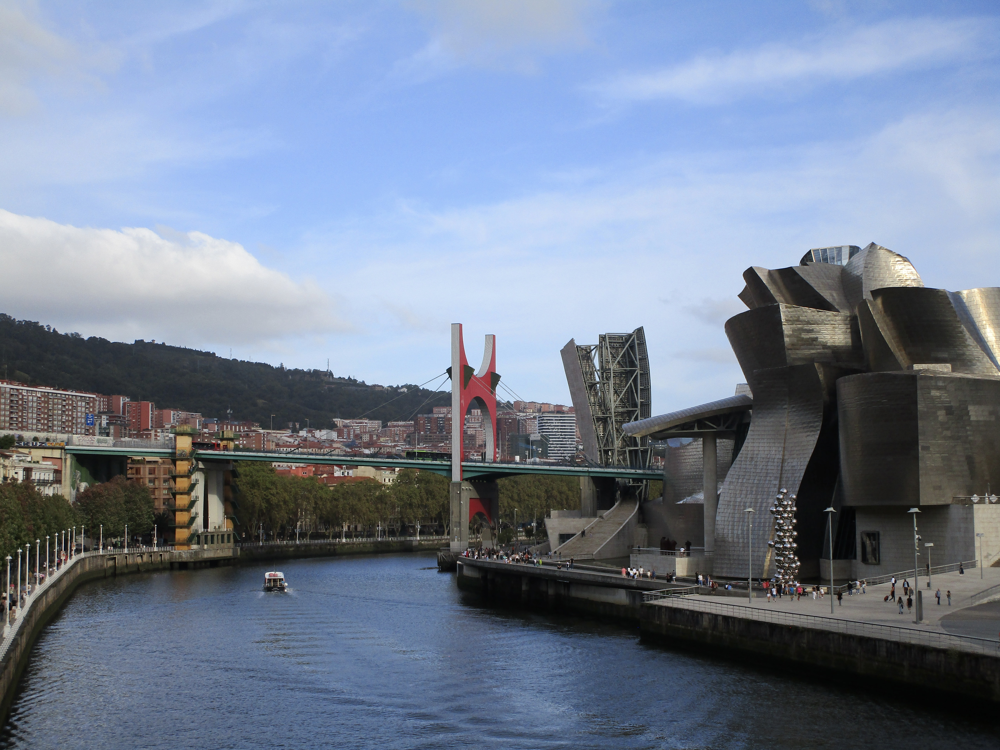
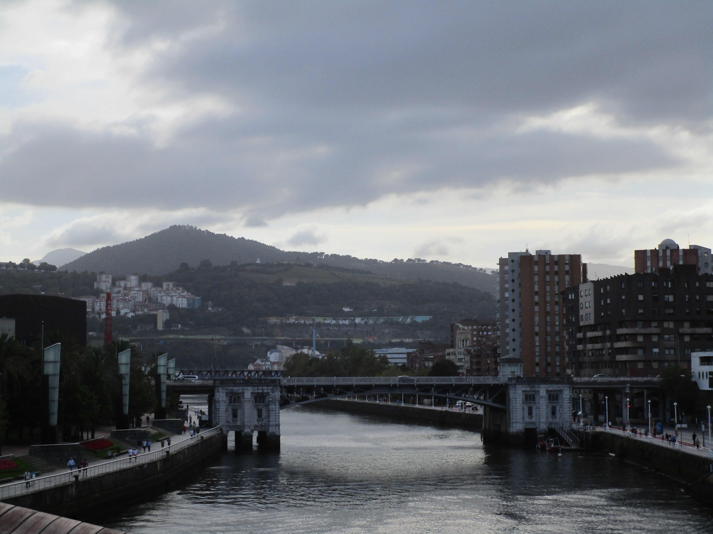
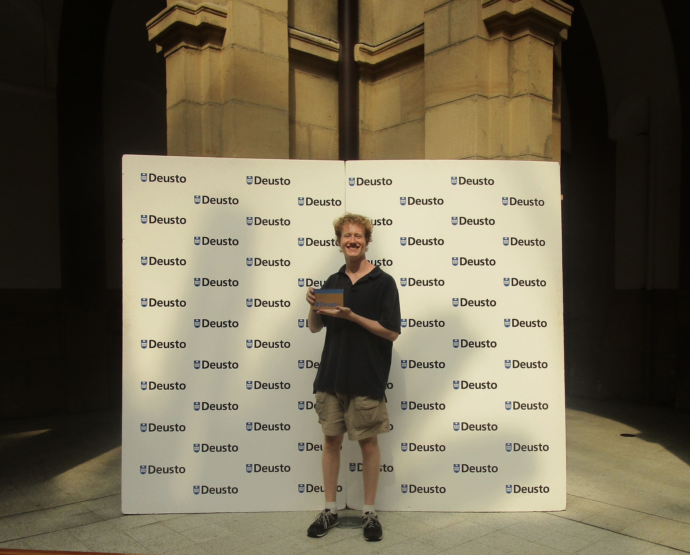
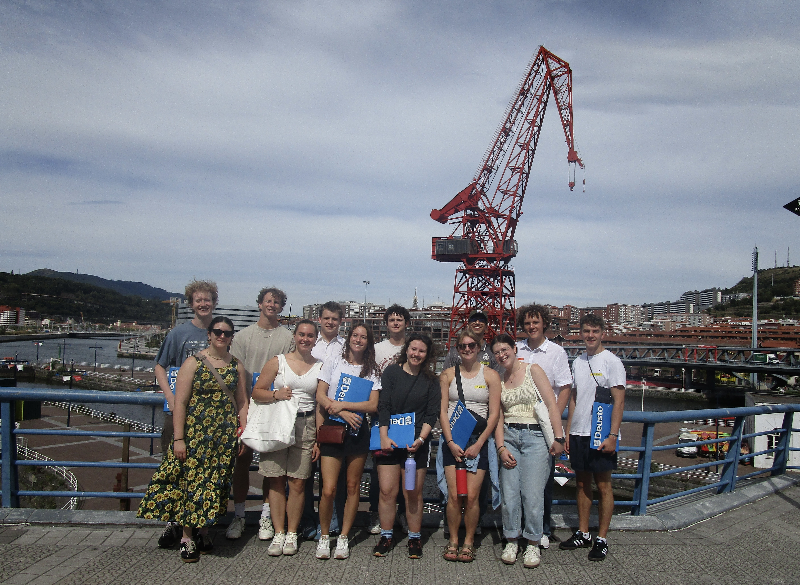
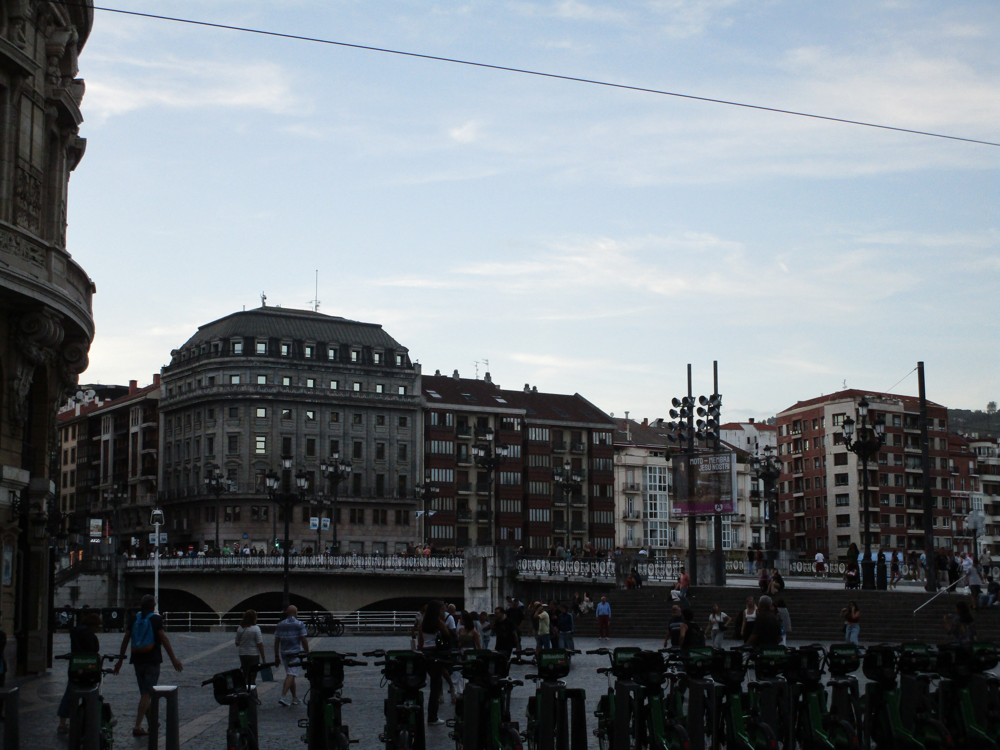
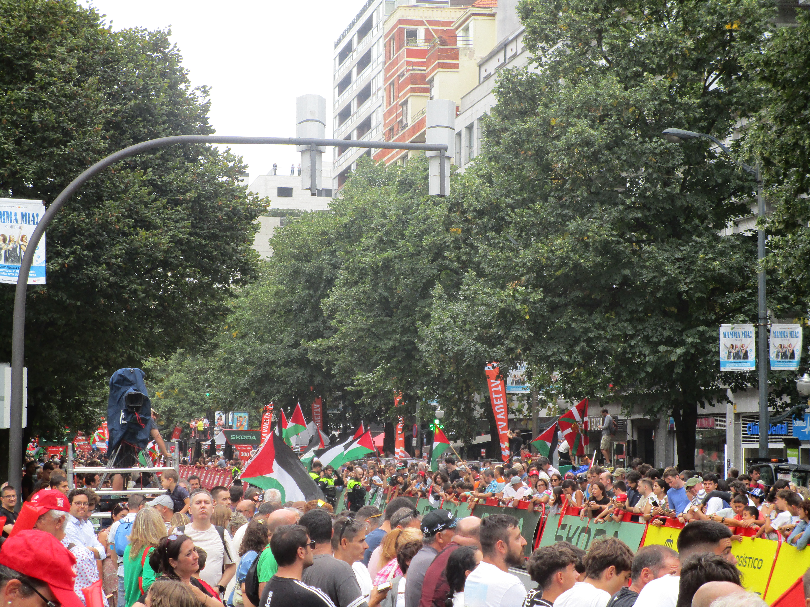
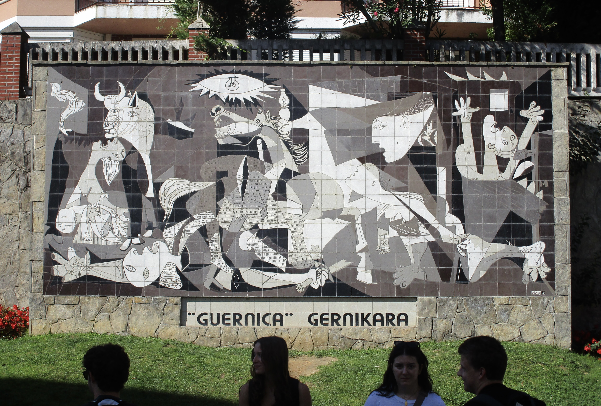
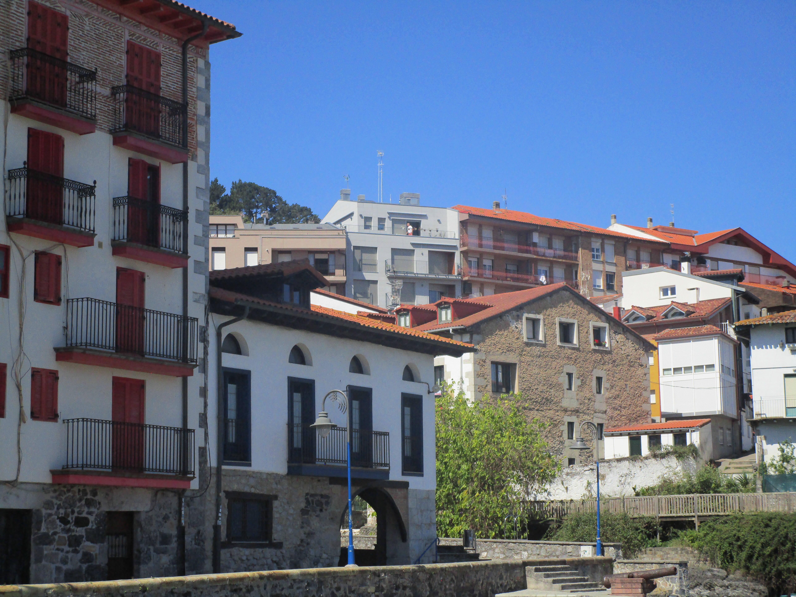
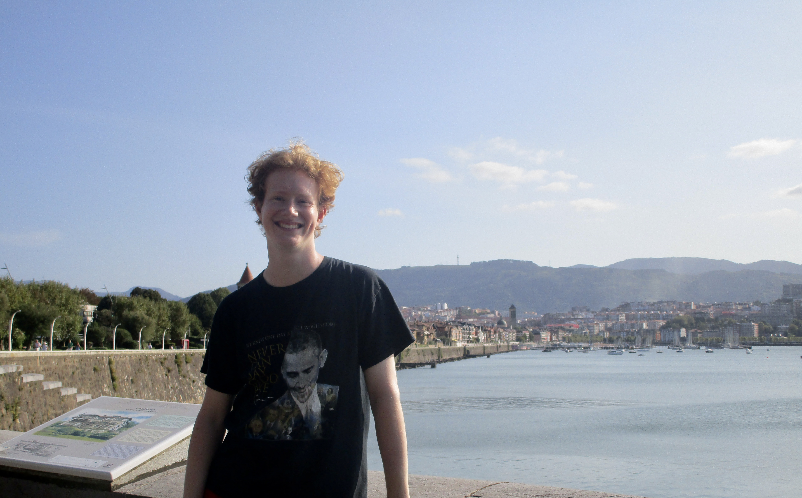
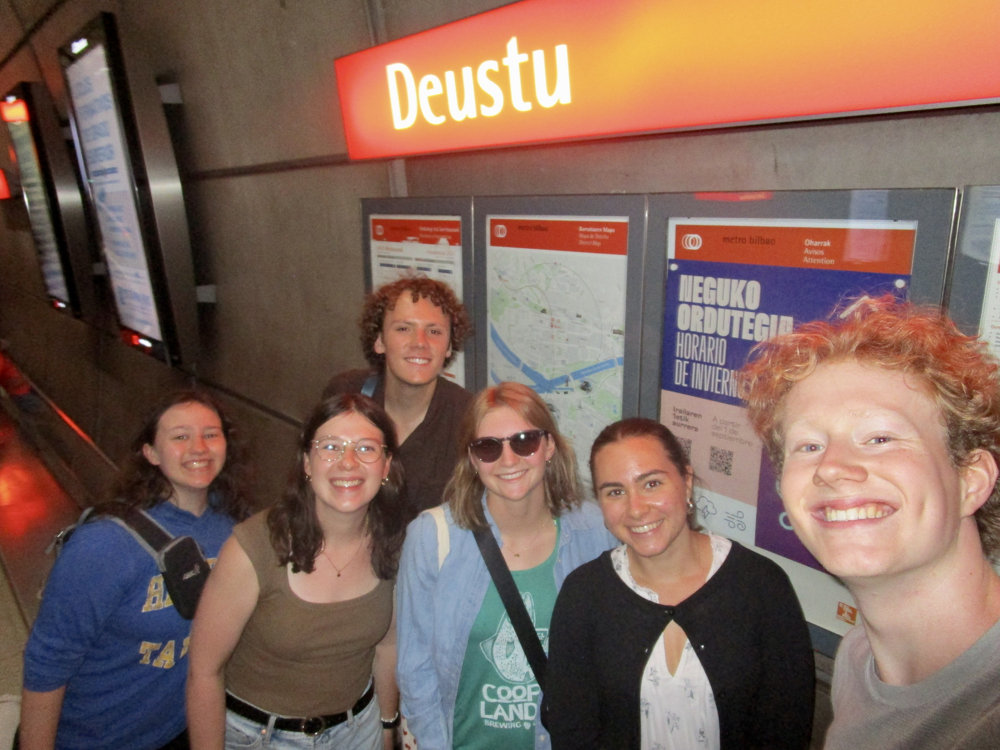

Primera Semana en Bilbao
Nine hours and one week ago I arrived from Madrid in Bilbao, Euskal Herria! So far my Spanish has improved tenfold and I even know some words in Basque ("Aupa" is "Hello") but most of all I've made some great friends. Today marks my second day of actual classes which so far seem to be incomparably easy to my classes at Sewanee, but Thursday I have a class with local students on Spanish Literature which is horrifying. Here are some photos from September in Bilbao!

Day one we were given a brief tour of the city, from the Guggenheim to our university, la Universidad de Deusto. Our meeting spot was a dog statue made of flowers called "Puppy," but in Bilbao they call it the "Poopy," which is much more fun. I forgot to take any photos of the university, or the puppy for that matter, but there's a beautiful bridge that spans the space between the two buildings!



Day two was serious. We had our Spanish placement test and met all of the other American students, who aren't as cool as my program but that's okay. We also made major headground walking around the city and took the Funicular up one of the mountains, which was so stupid gorgeous. A huge bike race in Europe called La Vuelta was supposed to come through Bilbao, but it was canceled just as the race was supposed to end because of a big protest against Israeli funding of a competitor. We watched it live and were there when it was canceled. This photo is actually contraband since it is apparently illegal to take photos of police. We had dinner with our host family, Sergio, Ana, Enzo y Cloe who are all super friendly! The grandparents were visiting too and it is not a big apartment, so we were squished into a closet kitchen, eight people around a small round table. Fun fact, even the Spanish eat sliced American cheese.


Day three we locked in and went to the beach. We got our metro cards which discount each ride to about a tenth of the price, and after having used the metro multiple times a day since day 2 I have gone from 10€ to 6€. The beach is ~30 minutes away and absolutely beautiful, with volleyball courts and a nice bar nearby, where my friends and I went after we'd cleaned off. This started a three-day beach marathon where we returned the very next day, and then took the train an hour and a half away to Mundaka, which had the clearest water of my life and the best views yet. The Guggenheim with its tentacles is trying to capture Basque Country in its entirety and build more exhibits in Urdaibai, the region of Mundaka and Gernika, and the people are not happy, so you can see in one of the photos a sign of a big fish (the Guggenheim) eating a small fish (Urdaibai).




I've skipped a few days but two days ago I decided to wander around Casco Viejo, where I live, and found a really cool park at the top of a staircase (on the Camino de Santiago) which I promptly showed my friends the next day. The past two days have been all classes and settling into life in Bilbao! I love speaking Spanish, going to the beach whenever I want and eating incredible food!

I'll probably post once every week or two! Leave comments for me to read >:)